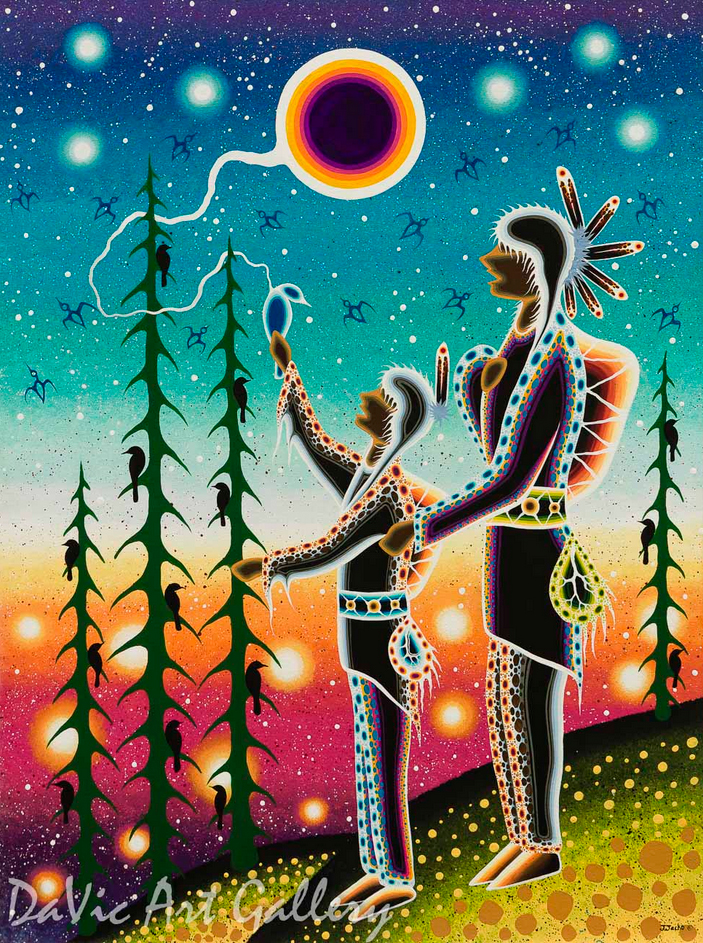

Teaching Through Story
In Indigenous knowledge systems, storytelling is not simply a way of communicating information. It is a way of teaching and learning that is grounded in relationships, place, and lived experience. Stories carry knowledge, values, teachings, and responsibilities, and they help learners understand how to live well in relation to others, the land, and the more-than-human world (Martinez, 2024; see References).
Indigenous pedagogies are deeply connected to land, lifeways, and intergenerational relationships. Teaching can be understood as place-based and relational, shaped by knowing the land, knowing the stories connected to place, and understanding how these teachings inform identity and belonging (Archibald, 2008; see References).
Within this approach, stories are not treated as entertainment alone or as isolated classroom content. Rather, they are living forms of knowledge that support memory, reflection, ethical understanding, and cultural continuity. Storytelling invites learners to listen carefully, think deeply, and make meaning over time.
Teaching through story shifts learning away from simple information delivery and toward shared meaning-making, relational listening, and learning that is connected to community, culture, and place (Archibald, 2008; McGregor, 2024; see References).

Storytelling in Teaching Contexts
In teaching contexts, storytelling supports learning by connecting children to ideas, experiences, and relationships. Stories provide meaningful ways for learners to engage with knowledge, not only through listening, but through participation, reflection, and shared understanding (McGregor, 2024; see References).
Storytelling in the classroom often involves more than reading or telling a story. It may include discussion, re-telling, role-play, or connecting stories to children’s own lives. Through these experiences, learners begin to see how stories relate to their families, communities, and everyday experiences.
Educators play an important role in facilitating these experiences. Rather than delivering fixed meanings, they support children in exploring different interpretations, asking questions, and making connections. This approach allows learning to emerge through interaction, dialogue, and reflection.
Storytelling also creates opportunities for inclusive and responsive teaching. Because stories can be understood in different ways, they allow learners to bring their own perspectives, experiences, and identities into the learning process. In this way, storytelling supports engagement, belonging, and meaningful participation in the classroom.
Learning Through Story
Learning through story involves more than hearing a narrative. It involves listening, reflection, interpretation, and openness to multiple layers of meaning. A story may be understood differently depending on time, place, context, and the experiences of the listener. For this reason, storytelling invites learners to return to stories thoughtfully rather than seeking one fixed lesson or simple moral (Rusk, 2023; see References).
Deep listening is an important part of this process. When someone shares a story, listening becomes a responsibility. Learners are invited to listen with attention, patience, and care, using not only their ears but their whole selves. This kind of listening creates space for memory, reflection, and deeper understanding, and it encourages learners to consider how stories speak to both individual and collective experience.
Because stories often connect ideas to lived experience, learners can relate them to their own lives, families, and communities. This makes storytelling a meaningful teaching approach that helps students connect with ideas, understand different viewpoints, and see the world through someone else’s perspective (McGregor, 2024; see References).
What Stories Can Carry
Knowledge and Relationships
- Stories can carry teachings about relationships among people, land, water, animals, and more-than-human life.
- They preserve community memory, history, and identity across generations.
- They support cultural continuity through language, shared experiences, and oral traditions.
- They can communicate ethical teachings about responsibility, reciprocity, and living well with others.
(Martinez, 2024; Rusk, 2023; see References)
Meaning-Making and Connection
- Stories invite learners to connect ideas to lived experience and personal reflection.
- They encourage perspective-taking and help learners understand different viewpoints.
- They support holistic learning by engaging thought, feeling, memory, and imagination together.
- They remind learners that knowledge is relational, contextual, and shaped through connection.
(Archibald, 2008; McGregor, 2024; see References)
The Role of the Educator
Teaching through story shifts the role of the educator from delivering information to supporting shared meaning-making. Rather than positioning knowledge as something transmitted in one direction, this approach invites educators to create spaces where stories can be listened to, discussed, reflected on, and connected to learners’ own experiences (McGregor, 2024; see References).
In educational settings, this can begin with the classroom community itself. Each learner brings family experiences, cultural traditions, and stories that shape how they understand the world. When these experiences are welcomed with care, students can begin to understand the significance and power of storytelling in their own lives and in the lives of others (Flemming, 2023; see References).
This approach also supports more inclusive and meaningful teaching. Storytelling helps learners engage emotionally and intellectually, connect ideas to experience, and build understanding through relationship rather than memorization alone. In this way, teaching through story can foster learning that is thoughtful, relational, and connected to community (McGregor, 2024; Flemming, 2023; see References).
Connect to pedagogy
Explore how storytelling supports relational, reflective, and holistic approaches to teaching and learning.
Go to Pedagogy →Start with respect
Consider protocols, responsibilities, and respectful engagement when working with Indigenous stories.
Go to Respectful Practice →Move into applications
See how storytelling can be connected to classroom and early childhood practice through materials, books, and experiences.
Go to Applications →